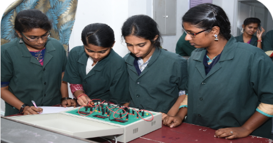
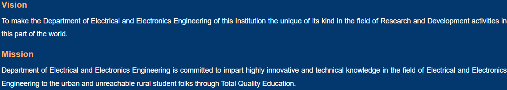

<
- The Department of Electrical and Electronics Engineering was established in the year 2002.
Currently it offers UG program in Electrical and Electronics Engineering with a sanctioned intake of 30.
In the year 2012, PG program in Power Systems Engineering was started. The current annual intake is 9 seats.
The Department of Electrical and Electronics Engineering has been accredited by National Board of Accreditation (NBA),
AICTE, and New Delhi in 2008-12, 2013-15, 2017-20. The Department has well qualified, experienced and dedicated team of 7
faculty members with specialization in various fields like Renewable Energy, Power Systems, Power Electronics & Drives,
Control & Instrumentation, High Voltage Engineering, Embedded Systems, Energy Engineering, Applied electronics, etc.
Three of our faculty members are doctorates with Ph.D., qualification and four of them are pursuing Ph.D. The Department
is recognized as Centre for Research by Anna University, Chennai since Jan 2013 and 2 faculty members are recognized Research
Supervisors, who are guiding 16 research scholars registered in our research centre. The department promotes research and development
in thrust areas like Solar PV, Smart Grid, High voltage engineering, Renewable energy, Industrial Automation, etc. The Department
houses state-of-art laboratory with modern Infrastructure and high-end equipment. The Department received Rs.72 Lakhs Projects Grant
from various agencies such as SERB, DST, IEI, AICTE, MSME, and TNSCST. Students are given wide practical exposure and hands-on training
in various domains and recent software's such as MATLAB and PSIM during laboratory sessions. The Department has established Industry
-Institute Interaction, through which students undergo implant training, internships, industry specific projects & also get
placement opportunities. The Department has the credit of consistently producing good graduation percentage every academic
year and also bags a good placement record. The Department organizes guest lectures, workshops, seminars, conferences, symposiums,
technical contests etc. to showcase the talents of our students in various Technical & Non-Technical
activities. The department offers Value Added Programs in association with industries/companies to enhance the employability skills of students.
